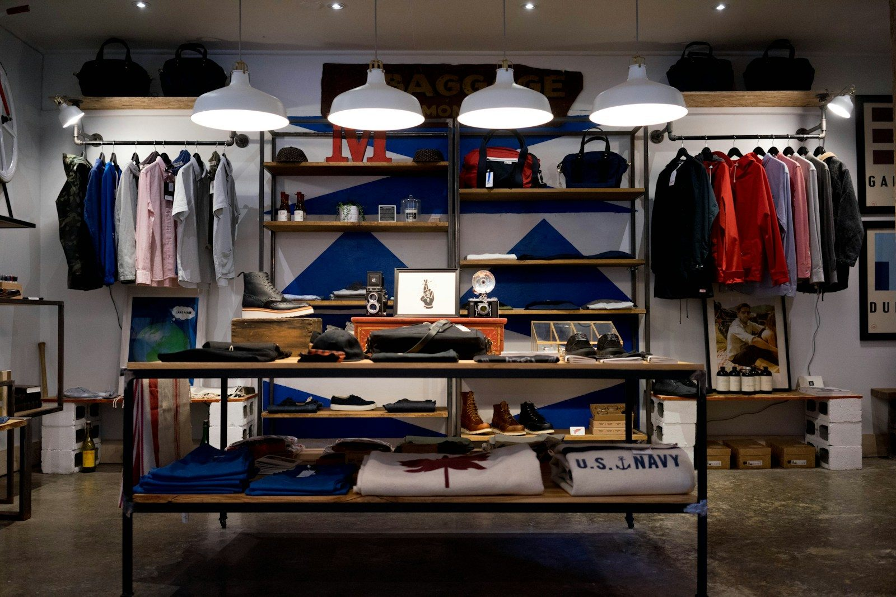

Diagnostic territorial
Qualifier les besoins, les ressources inutilisées et les priorités locales.
Préparer des coopérations territoriales autour du patrimoine vacant, du réemploi, des friches et de l'engagement local.

Qualifier les besoins, les ressources inutilisées et les priorités locales.
Préparer une lecture des logements, commerces, bâtiments et terrains.
Produire des supports d'aide à la décision, sans données non vérifiées.
Structurer les étapes, les acteurs et les conditions de mise en œuvre.
Mobiliser habitants, propriétaires, associations et acteurs économiques.
Préparer des modules pour référents locaux et bénévoles.
Oui, la demande peut être préparée via le formulaire dédié, puis qualifiée avec les informations disponibles.
Pas automatiquement. Les données sensibles doivent être vérifiées et encadrées avant toute publication.
Non. Elle se positionne comme outil d'appui, de mobilisation et de structuration.